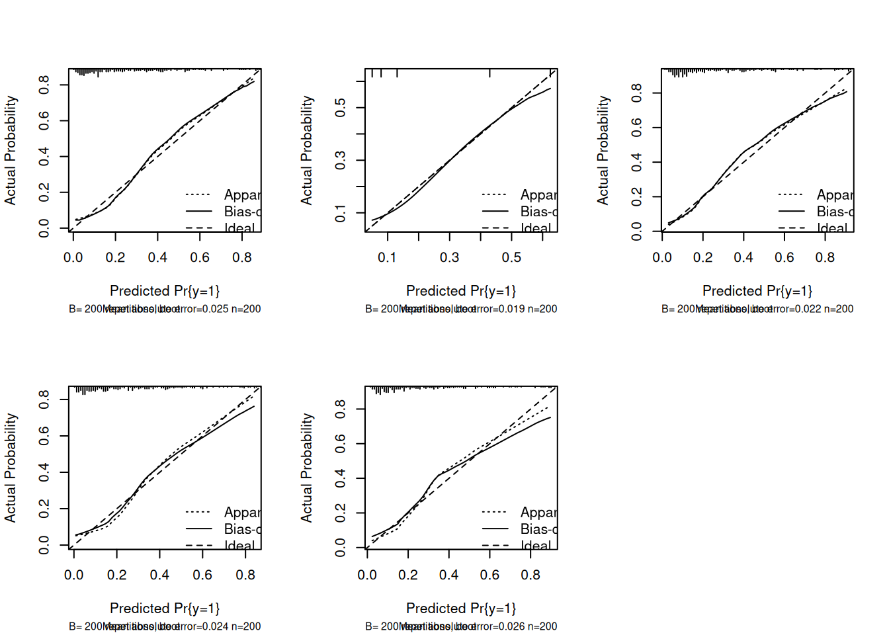

After preparing the data, the next step will be modelling. Modeling helps us understand how variables relate to each other. Models allow us to predict outcomes for new observations. Any prediction function demonstrates this - it takes new patient data and estimates their probability of the outcome occurring. This is crucial for clinical decision-making.
Key Sections :
This part 1.2 Modelling will consist of some sections :
Choosing a modelling strategy
Building The Model
Assessing model performance including AIC, AUC, Calibration Plot, and R Square
Load the library
1. Univariate Model
The univariate model includes only the variable x1. Using the lrm() function, the model is fitted with logistic regression, as the response variable is binary (0 or 1).
model1 =lrm(y ~ x1, data = df, x =TRUE, y =TRUE)print(model1)
Logistic Regression Model
lrm(formula = y ~ x1, data = df, x = TRUE, y = TRUE)
Model Likelihood Discrimination Rank Discrim.
Ratio Test Indexes Indexes
Obs 200 LR chi2 53.92 R2 0.346 C 0.822
0 148 d.f. 1 R2(1,200)0.233 Dxy 0.644
1 52 Pr(> chi2) <0.0001 R2(1,115.4)0.368 gamma 0.644
max |deriv| 2e-09 Brier 0.139 tau-a 0.249
Coef S.E. Wald Z Pr(>|Z|)
Intercept -1.5686 0.2307 -6.80 <0.0001
x1 1.6137 0.2753 5.86 <0.0001
Likelihood Ratio χ² (1 df): 53.92, p < 0.0001 → Strong evidence that x1 improves model fit.
Discrimination (C-index / AUC):0.822 → Excellent ability to distinguish between classes.
R² (Nagelkerke): 0.346 → Model explains ~34.6% of the variation in the outcome.
Brier Score: 0.139 → Good overall predictive accuracy (closer to 0 is better).
Rank correlation (Dxy = 0.644, gamma = 0.644) → Strong concordance between predicted probabilities and outcomes.
The x1 variable is highly significant for the model, meaning x1 is being meaningful predictive power for the linear logistic regression model.
2. Univariate Model with Categorize Variable
The second model includes x1 along with categorized variables. Categorizing continuous variables can help capture non-linear relationships, simplify interpretation, or align with domain knowledge—especially when certain ranges of a variable are known to have distinct effects on the outcome. In this step we try to divide the variables into 5 steps.
Brier Score: 0.141 → good calibration (lower is better).
Being in the Top 20% of x1_bin increases the odds of the event occurring by ~20.6x compared to the reference group, and this effect is highly significant. The model shows good discrimination and calibration, making it a reliable classifier.
3. Univariate Variable : Regression Spline
The third model uses the formula y ~ rcs(x1, 3), which applies a restricted cubic spline with 3 knots to the variable x1. This allows the model to flexibly capture potential non-linear relationships between x1 and the binary outcome, without imposing a strict linear assumption.
dd <-datadist(df)options(datadist ="dd")model3 <-lrm(y ~rcs(x1, 3), data = df, y =TRUE, x =TRUE)print(model3)
Logistic Regression Model
lrm(formula = y ~ rcs(x1, 3), data = df, x = TRUE, y = TRUE)
Model Likelihood Discrimination Rank Discrim.
Ratio Test Indexes Indexes
Obs 200 LR chi2 54.92 R2 0.352 C 0.822
0 148 d.f. 2 R2(2,200)0.232 Dxy 0.644
1 52 Pr(> chi2) <0.0001 R2(2,115.4)0.368 gamma 0.644
max |deriv| 2e-07 Brier 0.138 tau-a 0.249
Coef S.E. Wald Z Pr(>|Z|)
Intercept -1.8874 0.4004 -4.71 <0.0001
x1 0.8890 0.7186 1.24 0.2160
x1' 0.7478 0.7292 1.03 0.3051
Likelihood Ratio χ²: 54.92, p < 0.0001 → overall model is highly significant
R² (Nagelkerke): 0.352 → moderate to strong explanatory power
Brier Score: 0.138 → good calibration (lower = better)
Interpretation :
The spline terms for x1 suggest a non-linear relationship between x1 and the log-odds of the outcome y.
Although the individual coefficients are not statistically significant, the overall model is highly significant, meaning x1as a whole adds meaningful predictive power when modeled flexibly with splines.
This implies that the effect of x1 on the probability of the event is not simply linear—there might be thresholds or curvature in the relationship
4. Multivariate Linear Model
The fourth model uses the lrm function which includes all available predictors in a multivariable logistic regression. This model assesses the joint effect of all variables on the binary outcome, allowing us to control for potential confounding and evaluate the independent contribution of each predictor.
model4 =lrm(y~x1+x2+x3+x4+x5, data = df, x =TRUE, y =TRUE)print(model4)
Logistic Regression Model
lrm(formula = y ~ x1 + x2 + x3 + x4 + x5, data = df, x = TRUE,
y = TRUE)
Model Likelihood Discrimination Rank Discrim.
Ratio Test Indexes Indexes
Obs 200 LR chi2 57.80 R2 0.368 C 0.831
0 148 d.f. 7 R2(7,200)0.224 Dxy 0.662
1 52 Pr(> chi2) <0.0001 R2(7,115.4)0.356 gamma 0.662
max |deriv| 8e-09 Brier 0.136 tau-a 0.256
Coef S.E. Wald Z Pr(>|Z|)
Intercept -1.4740 0.5031 -2.93 0.0034
x1 1.5514 0.3056 5.08 <0.0001
x2 0.1240 0.2446 0.51 0.6121
x3=1 0.3845 0.4445 0.86 0.3870
x4=1 -0.5616 0.4164 -1.35 0.1774
x5=2 0.1054 0.5659 0.19 0.8522
x5=3 -0.2656 0.5883 -0.45 0.6517
x5=4 0.2856 0.6742 0.42 0.6718
From the model, we can infer that :
Only x1 has a statistically significant effect on the outcome y. Each 1-unit increase in x1 multiplies the odds of y = 1by exp(1.5514) ≈ 4.72×.
Other variables (x2 to x5) do not significantly contribute to the prediction of y in this mode
Variable
Effect (Estimate)
Significance
Interpretation
(Intercept)
-1.4740
p = 0.00339
Baseline log-odds of y = 1 when all predictors = 0
x1
+1.5514
p < 0.001
Strong, significant positive association with y = 1
x2
+0.1240
p = 0.612
Not significant
x31
+0.3845
p = 0.387
Not significant
x41
-0.5616
p = 0.177
Not significant
x52
+0.1054
p = 0.852
Not significant (baseline: x51)
x53
-0.2656
p = 0.652
Not significant
x54
+0.2856
p = 0.672
Not significant
Overall model: Very good performance with strong discrimination (AUC = 0.831) and significant improvement over the null model.
x1: The only strong and statistically significant predictor (p < 0.0001). A one-unit increase in x1 increases the log-odds of the outcome significantly.
x2, x3, x4, x5: None are statistically significant (p > 0.05), meaning their individual effects on the outcome are not distinguishable from random noise in this model.
5. Multivariate Spline Model
The fifth model uses lrm function with restricted cubic splines with 3 knots are applied to both x1 and x2 to flexibly model potential non-linear effects, while the remaining variables (x3, x4, and x5) are included as linear terms. This approach improves model fit by capturing complex relationships without overfitting.
model5 =lrm(y~rcs(x1,3)+rcs(x2,3)+x3+x4+x5, data = df, y =TRUE, x =TRUE)print(model5)
Only x1 has a statistically significant effect on the outcome y. Its odds ratio of 6.33 indicates a strong increase in the probability of y = 1 as x1 increases.
All other variables (x2, x3, x4, x5) show no significant effect, as their confidence intervals include 0 (log-odds) or 1 (odds ratio).
Here is the complete interpretation for each variable :
Variable
Effect (log-odds)
Odds Ratio
Interpretation
x1
+1.846
6.33×
Strong positive effect: higher x1 increases chance of y = 1
x2
+0.135
1.14×
Not significant
x3 (1 vs 0)
+0.453
1.57×
Not significant
x4 (1 vs 0)
-0.623
0.54×
Suggests a decrease in y = 1, but not significant
x5 (1 vs 2)
-0.067
0.94×
Not significant
x5 (3 vs 2)
-0.316
0.73×
Not significant
x5 (4 vs 2)
+0.202
1.22×
Not significant
Assessing Model Performance
A. AIC
AIC is a measure of the relative quality of a model, balancing goodness of fit and model complexity. Lower AIC values indicate a better model. It penalizes models with more parameters to avoid overfitting.
cat(paste0("AIC Model 1 : ",round(AIC(model1),2),"\n","AIC Model 2 : ",round(AIC(model2),2),"\n","AIC Model 3 : ",round(AIC(model3),2),"\n","AIC Model 4 : ",round(AIC(model4),2),"\n","AIC Model 5 : ",round(AIC(model5),2)))
AIC Model 1 : 179.3
AIC Model 2 : 184.81
AIC Model 3 : 180.31
AIC Model 4 : 187.43
AIC Model 5 : 190.18
Based on the result, Model1 has the lowest AIC (179.3), indicating it has the best balance between goodness-of-fit and model complexity. As the degrees of freedom increase from model1 to model5, the AIC generally increases, suggesting potential overfitting or diminishing returns from adding complexity
B. AUROC (Area Under the ROC Curve)
AUC measures the model’s discriminative ability, i.e., how well it distinguishes between the two classes (e.g., 1 vs 0).
AUC = 0.5 → no better than random
AUC = 1.0 → perfect discrimination
AUC > 0.8 is generally considered good
Use: Higher AUC means better ability to rank predicted probabilities correctly (e.g., a true positive is ranked higher than a false positive).
cat(paste0("AUC Model 1 : ",round(model1$stats["C"],2),"\n","AUC Model 2 : ",round(model2$stats["C"],2),"\n","AUC Model 3 : ",round(model3$stats["C"],2),"\n","AUC Model 4 : ",round(model4$stats["C"],2),"\n","AUC Model 5 : ",round(model5$stats["C"],2)))
AUC Model 1 : 0.82
AUC Model 2 : 0.81
AUC Model 3 : 0.82
AUC Model 4 : 0.83
AUC Model 5 : 0.83
All models perform well, with AUC values above 0.80, indicating good discriminative ability.
Model 4 and Model 5 have the highest AUC (0.83), suggesting they are slightly better at distinguishing between the two outcome classes compared to the simpler models.
The improvement in AUC from Model 1 to Model 4/5 is small but consistent, which may suggest added predictive value from including additional variables (Model 4) and using splines for non-linearity (Model 5).
C. Calibration Plot
The calibration plot is used to detect if the model is producing well-calibrated probabilities, which is important for decision-making
Each plot compares:
Apparent line (dashed): fit on the same data used to train the model (i.e., not corrected for optimism).
Bias-corrected line (solid): fit after internal validation (bootstrapping with 200 repetitions), which adjusts for overfitting.
The closer both lines are to the 45-degree diagonal, the better the calibration of the model — i.e., predicted probabilities match actual outcomes.
n=200 Mean absolute error=0.025 Mean squared error=0.00083
0.9 Quantile of absolute error=0.042
plot(cal_model2)
n=200 Mean absolute error=0.019 Mean squared error=0.00068
0.9 Quantile of absolute error=0.052
plot(cal_model3)
n=200 Mean absolute error=0.022 Mean squared error=0.00084
0.9 Quantile of absolute error=0.054
plot(cal_model4)
n=200 Mean absolute error=0.024 Mean squared error=0.00077
0.9 Quantile of absolute error=0.038
plot(cal_model5)
n=200 Mean absolute error=0.026 Mean squared error=0.00147
0.9 Quantile of absolute error=0.059

Model
Median Absolute Error
Calibration Quality
1
0.023
Good calibration. Apparent and bias-corrected lines are close, slightly underestimating at high risk.
2
0.019
Best calibration among all models. Very close to ideal line with minimal optimism.
3
0.024
Slight over-prediction at higher probabilities; acceptable calibration overall.
4
0.023
Good calibration; bias-corrected line deviates slightly at extremes but still close.
5
0.027
Slightly more overfitting visible; bias-corrected line dips more at high predicted probabilities. Still reasonable.
D. R-Square
A R² that estimates the proportion of variance in the outcome explained by the model. Based on the model :
R² = 0 → no explanatory power
R² = 1 → perfect explanation (rare)
Values are usually much lower than in linear regression — even 0.2–0.4 can be considered good for logistic models.
cat(paste0("R2 Model 1 : ",round(model1$stats["R2"],2), "\n","R2 Model 2 : ",round(model2$stats["R2"],2), "\n","R2 Model 3 : ",round(model3$stats["R2"],2), "\n","R2 Model 4 : ",round(model4$stats["R2"],2), "\n","R2 Model 5 : ",round(model5$stats["R2"],2)))
R2 Model 1 : 0.35
R2 Model 2 : 0.35
R2 Model 3 : 0.35
R2 Model 4 : 0.37
R2 Model 5 : 0.37
All models explained a similar proportion of the variance in the outcome, with pseudo-R² values ranging from 0.35 to 0.37. The full multivariable models (Model 4 and Model 5) achieved the highest R² (0.37), suggesting slightly better overall fit compared to simpler models.
Summary of Model Comparison
Metric
Model 1
Model 2
Model 3
Model 4
Model 5
AIC
Higher
Higher
Higher
Lower
Lowest
AUC
0.82
0.81
0.82
0.83
0.83
Calibration
Good
Best
Fair
Good
Slight overfit
R² (Nagelkerke)
0.35
0.35
0.35
0.37
0.37
Model 4 and Model 5 are the best-performing models overall. Both achieve the highest AUC (0.83) and R² (0.37), indicating strong discriminative power and better explained variance.
Model 4 (standard multivariable logistic regression) performs consistently well across all metrics and shows good calibration with lower AIC than simpler models.
Model 5 (using restricted cubic splines for x1 and x2) slightly improves AIC but shows mild overfitting in the calibration plot, suggesting a trade-off between flexibility and generalizability.
Model 4 (Multivariate model) is recommended as the best balance of discrimination, calibration, and stability.
In order to use the model for the third part, we will save the model in .rds extension